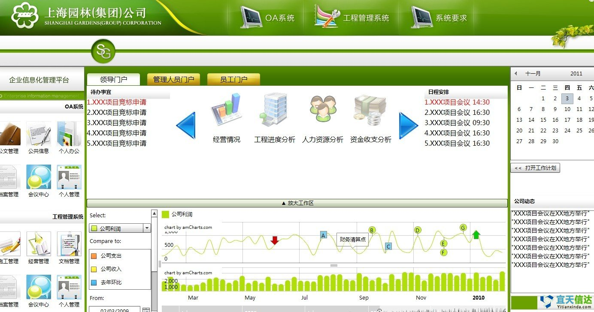
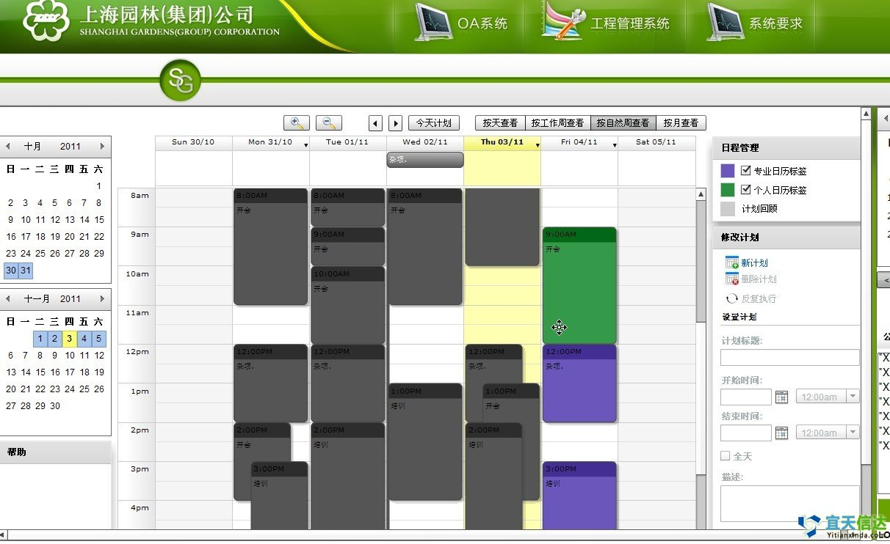
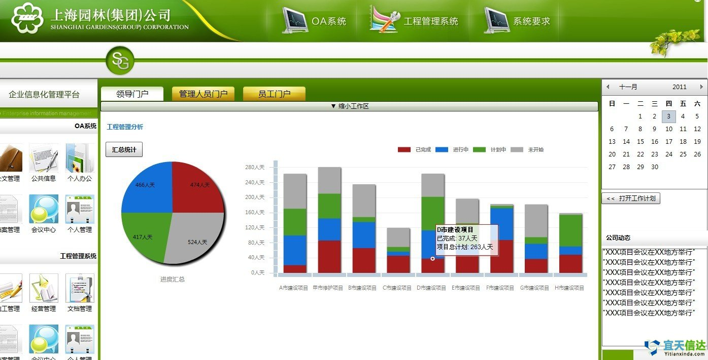
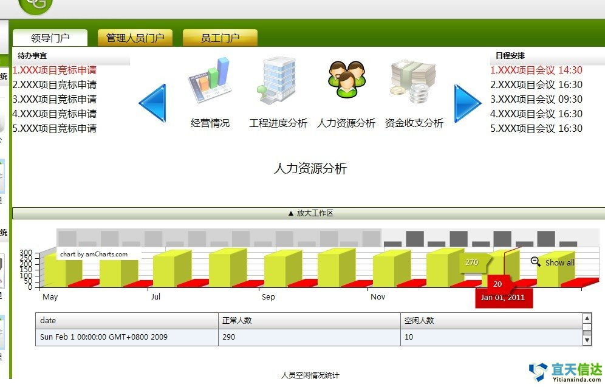

咨询邮箱：service@yitianxinda.com
咨询邮箱：service@yitianxinda.com
 咨询热线：400-668-3065
咨询热线：400-668-3065

 咨询邮箱：service@yitianxinda.com
咨询热线：400-668-3065
咨询邮箱：service@yitianxinda.com
咨询热线：400-668-3065
 所属行业：
所属行业：
服务内容：
成果摘要：
Ø 日常办公
日常办公模块包括网上审批、公文处理、工作监控功能，网上审批对集团公司内所有需审批事项进行审核、报批、归档等操作，如请假、费用报销、工程预算、报价、信息发布、加班申请等功能

Ø 会议管理
1、会议室管理
使用本功能对单位内的各个会议室进行统一管理和维护。
2、会议室查询
会议室查询功能主要是查看单位内各个会议室的预定和登记情况。
3、查询发送打印会议通知
使用本功能对单位内召开的会议发送相应的会议通知可以对同一个会议发送多次会议通知，同时可以查看会议信息和每次发送的会议通知情况，可以打印指定的会议通知
4、会议纪要管理
使用本功能对单位内召开的会议增加或修改会议纪要内容
5、查询会议信息
使用本功能查询显示已登记的会议及其相关信息，如会议纪要，发过的会议通知等
Ø 流程管理
使用流程管理对所有审批流程进行设置、编辑、删除操作

Ø 内部通讯平台
类似于IM软件内部人员可即时通讯
Ø 公共信息管理
公司新闻、动态信息都可在这里进行维护，主要功能包含信息栏目管理、信息发布管理、信息中心、常用链接、
Ø 辅助办公
辅助办公包含物品管理、车辆管理、资源管理、图书管理、领导活动安排、名片管理、时刻表、信息采编等功能如下图：
Ø 工作计划
工作计划管理可针对整个组织机构、部门或具体的工程项目进行管理。管理人员可以使用本功能制订整个机构工作计划、部门工作计划或项目工作计划，同时将这些计划分解到具体的执行人员；并可以随时检查计划的执行情况。员工根据分配到的工作计划，可以定期上传相应的工作报告，填写工作日志，同时可以上传相应的附件。
工作计划管理的处理流程时：首先设置、建立相应的计划类别和报告类别；然后即可制订相应的工作计划并进行计划的分解、指定相应的执行负责人；执行负责人填写相应的工作报告和工作日志；计划的制订人员（发布人）可随时检查计划的执行情况，对员工完成的任务进行检查，考评和管理；当员工执行完某个工作计划时，可提出完成申请，由计划的发布人负责核准。主要包含以下几方面：
1、 计划类别管理
是根据组织中的实际情况，由用户自己定义计划的分类，如：销售计划、生产计划、部门工作计划、项目计划、等等，方便计划的执行、检查、监督和控制。
在计划类别管理页面，可进行新增、修改、删除计划类别处理。
2、 报告类别管理
报告类别管理可以使员工或计划负责人更加明确需要提交的工作报告或工作总结。在这里，可以设置如：销售情况报告、生产情况报告、经营情况报告、周工作报告、考评报告、等等。
在报告类别管理页面，可进行新增、修改、删除报告类别处理。
3、 工作计划管理
通过工作计划管理，计划的制订人（发布人）可以制订相应的组织机构计划、部门计划、项目计划等，同时将这些计划进行分解、落实到具体的员工（计划执行的负责人）。发布人具有对计划进行分解、考评、核准计划完成情况、终止计划执行的权限。员工可以针对落实到自己的计划，分解制订自己得计工作计划。
在计划执行过程中，计划的相关人员可以随时提交有关的计划执行报告、总结报告或考评报告等，同时也可以上传相应当的附件文件；工作计划执行完时，计划负责人可以提交计划完成申请，再由计划的发布人进行审核确认。
在工作计划管理中，管理人员可以随时掌握计划的执行进度情况，便于及时进行相关的调整和修订。
4、 填写工作日志
员工使用本功能填写每天的工作日志，员工在填写日志时，可将当天的工填写一份工作日志，也可以分时间段填写多个日志明细，同时可以上传一些相关的附件文件。
员工可随时查询已经填写过的工作日志。
5、 全体日志查询
管理人员使用本功能，可随时查询指定部门员工的工作日志情况，及时了解员工每天的工作情况。
6、 全部计划查询
使用本功能可查询指定计划的相关信息及其分解的子计划信息。
7、 日志参数设置
管理人员使用本功能设置员工可修改日志的日期范围。
Ø 公文流转
公文流转以用于处理日常工作中的单位内外部的各种公文，利用计算机网络的高速迅捷和计算机控制的严格准确性实现公文的处理。公文管理模块相对传统公文处理而言，在很大程度上提高了公文处理效率和准确性，用户操作简便易行。公文流转包括了公文的发文拟制、发文审核、发文会签、发文签发、发文登记、发文传阅、收文签收登记、收文审核、收文拟办、收文批办、收文承办、公文归档销毁、公文查询以及公文的流程监控、公文催办、公文流程定制等。
公文流转中，用户可以预先定义公文的处理流程及相应的处理权限，在拟制、登记及公文流转过程中具有相应权限的人员可以进行公文在线编辑，可以进行跳签、插签、退签、撤销等处理。
1、 发文拟制
发文拟制是具有公文拟制权限的员工使用本功能新增公文，录入、编辑公文属性，根据公文模版建立并在线编辑公文正文，上传公文附件，定制公文流转工作流。
2、 收文登记
收文登记用于外部来文的签收、登记处理，包括：新增公文、录入、编辑公文信息、导入外部文件作为公文正文，上传公文附件，定制公文流转工作流。
3、 公文办理
公文办理是指公文在流转过程中，需要有关人员对公文进行相应的处理工作，包括：发文草拟、发文审核、发文会签、发文签发、发文登记、发文传阅、收文签收登记、收文审核、收文拟办、收文批办、收文承办等处理。
4、 公文催办
此模块应具有使用权限的人员使用。使用本功能查看所有未办理完成的公文情况及其办理情况，对未办理的工作点的等相关人员以邮件或消息的方式发送催办信息。
5、 公文跳转
此模块应具有使用权限的人员使用。使用本功能可以强制改变所有未办理完成的公文流转。
6、 归档销毁
此模块对已经完成办理的公文按归档目录归档，已归档的公文可以改变归档目录；可以销毁已经归档的公文。
此模块应具有使用权限的人员使用。
7、 公文查询
使用此功能，可以通过设置相应的查询条件，查询显示公文信息。
8、 参数设置
公文参数设置是用户结合本单位的实际情况，为使公文管理功能正常进行需要对公文管理的有关参数进行预先设置以及进行日常维护工作。参数设置包括：密级权限设置、公文模板设置、公文流程模板设置、公文类别设置、公文办理定义、公文日志管理

